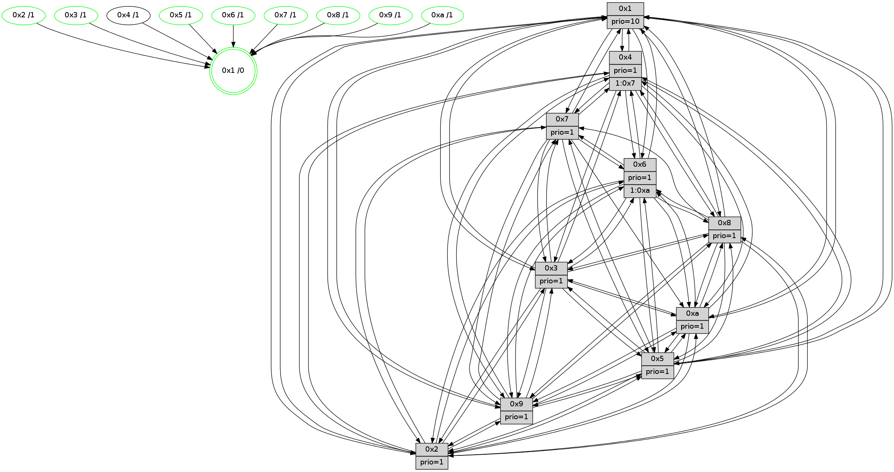

>> << IDX [start] -100 -25 -5 +0 +5 +25 +100 [925.009622097]
 Previous packets
----------------------------------------------------------------------
920.177439 beacon01(faad) #0 coord=01,02,03,04,05,06,07,0a,09,08 cycle=688.0ms assoc
-- color-indic=1 64 27 68
920.187422 beacon02(faad) #0 coord=01,02,03,04,05,06,07,0a,09,08 cycle=688.0ms assoc 64 b4 59
920.197423 beacon03(faad) #0 coord=01,02,03,04,05,06,07,0a,09,08 cycle=688.0ms assoc 64 ce 14
920.207422 beacon04(faad) #0 coord=01,02,03,04,05,06,07,0a,09,08 cycle=688.0ms assoc 64 b9 fe
920.217422 beacon05(faad) #0 coord=01,02,03,04,05,06,07,0a,09,08 cycle=688.0ms assoc 64 c3 b3
920.227421 beacon06(faad) #0 coord=01,02,03,04,05,06,07,0a,09,08 cycle=688.0ms assoc 64 4d 64
920.237423 beacon07(faad) #0 coord=01,02,03,04,05,06,07,0a,09,08 cycle=688.0ms assoc 64 37 29
920.247427 beacon0a(faad) #0 coord=01,02,03,04,05,06,07,0a,09,08 cycle=688.0ms assoc 64 46 22
920.257427 beacon09(faad) #0 coord=01,02,03,04,05,06,07,0a,09,08 cycle=688.0ms assoc 64 c8 f5
920.267430 beacon08(faad) #0 coord=01,02,03,04,05,06,07,0a,09,08 cycle=688.0ms assoc 64 b2 b8
920.278706 [STC(6)->1 #0.118 tree-change,inconsistent-stability,stable,to-color d=1]
920.282566 [Hello(8): seq=532 sym=5,2,3,4,9,6,7,10,1 sysInfo=hasWarning stat=5:3,12,15,11/2:2,7,10,4/3:5,11,9,11/4:7,2,8,6/9:10,13,5,0/6:6,11,6,10/7:7,5,0,1/10:11,13,2,0/1:8,1,9,0]
920.285484 [Hello(4): seq=588 sym=5,7,6,2,3,9,8,10,1 sysInfo= stat=5:1,1,10,10/7:9,11,12,6/6:15,5,8,9/2:2,15,4,9/3:9,13,6,7/9:7,5,14,6/8:5,4,1,1/10:11,11,0,8/1:11,9,11,1]
920.289347 [STC(3)->1 #0.118 tree-change,inconsistent-stability,stable,to-color d=1]
920.290774 [STC(8)->1 #0.118 tree-change,inconsistent-stability,stable,to-color d=1]
920.293215 [STC(2)->1 #0.118 tree-change,inconsistent-stability,stable,to-color d=1]
920.294527 [STC(4)->1 #0.118 tree-change,inconsistent-stability,to-color d=1]
920.297078 [Hello(9): seq=532 sym=2,5,3,4,7,6,8,10,1 sysInfo=hasWarning stat=2:1,14,10,2/5:3,14,7,2/3:0,3,6,11/4:7,6,4,6/7:1,5,11,8/6:1,11,14,8/8:15,9,13,1/10:2,5,0,0/1:11,12,13,1]
920.299637 [Hello(10): seq=521 sym=6,2,3,8,9,5,7,4,1 sysInfo=hasWarning stat=6:3,13,11,4/2:9,7,9,4/3:2,13,4,7/8:7,3,2,0/9:10,12,11,2/5:6,9,14,11/7:2,5,8,5/4:0,6,1,6/1:3,11,13,1]
920.302126 [STC(9)->1 #0.118 tree-change,inconsistent-stability,stable,to-color d=1]
920.303787 [Color(9) seq=237 @0:0 prio=1 >>1.@9,1.@a]
920.305273 [Color(3) seq=229 @0:0 prio=1]
920.306702 [STC(10)->1 #0.118 tree-change,inconsistent-stability,stable,to-color d=1]
920.309532 [Color(1) seq=269 @0:0 prio=10 >>1.@8,1.@9,1.@a]
920.311581 [Hello(7): seq=588 sym=2,3,5,6,4,9,8,10,1 sysInfo=hasWarning stat=2:15,7,6,12/3:14,7,13,11/5:1,7,2,14/6:13,2,13,6/4:2,6,12,0/9:8,15,6,1/8:10,14,5,0/10:11,2,3,1/1:0,6,10,0]
920.314377 [TreeStatus(10)-.->1 #0.118 tree-change,inconsistent-stability,stable child=1]
920.316294 [Color(8) seq=233 @0:0 prio=1]
920.317634 [Color(10) seq=209 @0:0 prio=1 >1.@9]
920.325695 [STC(7)->1 #0.118 tree-change,inconsistent-stability,stable,to-color d=1]
920.327961 [Color(7) seq=183 @0:0 prio=1]
----------------------------------------------------------------------
920.965571 beacon01(faad) #0 coord=01,02,03,04,05,06,07,0a,09,08 cycle=688.0ms assoc
-- color-indic=1 64 e3 66
920.975554 beacon02(faad) #0 coord=01,02,03,04,05,06,07,0a,09,08 cycle=688.0ms assoc 64 70 57
920.985554 beacon03(faad) #0 coord=01,02,03,04,05,06,07,0a,09,08 cycle=688.0ms assoc 64 0a 1a
920.995553 beacon04(faad) #0 coord=01,02,03,04,05,06,07,0a,09,08 cycle=688.0ms assoc 64 7d f0
921.005554 beacon05(faad) #0 coord=01,02,03,04,05,06,07,0a,09,08 cycle=688.0ms assoc 64 07 bd
921.015554 beacon06(faad) #0 coord=01,02,03,04,05,06,07,0a,09,08 cycle=688.0ms assoc 64 89 6a
921.025553 beacon07(faad) #0 coord=01,02,03,04,05,06,07,0a,09,08 cycle=688.0ms assoc 64 f3 27
921.035559 beacon0a(faad) #0 coord=01,02,03,04,05,06,07,0a,09,08 cycle=688.0ms assoc 64 82 2c
921.045561 beacon09(faad) #0 coord=01,02,03,04,05,06,07,0a,09,08 cycle=688.0ms assoc 64 0c fb
921.055561 beacon08(faad) #0 coord=01,02,03,04,05,06,07,0a,09,08 cycle=688.0ms assoc 64 76 b6
921.068673 [Hello(3): seq=589 sym=1,7,6,2,4,8,9,10,5 sysInfo= stat=1:10,9,1,0/7:15,13,5,7/6:7,7,8,2/2:5,13,9,9/4:4,9,12,5/8:4,5,5,1/9:9,10,8,9/10:12,10,5,2/5:12,6,3,10]
921.072392 [Hello(2): seq=585 sym=4,5,7,6,3,9,8,10,1 sysInfo=hasWarning stat=4:10,12,3,5/5:3,6,3,0/7:9,7,15,9/6:8,0,8,8/3:13,3,5,5/9:10,10,8,3/8:13,4,5,8/10:13,5,8,9/1:0,8,11,1]
921.076001 [Hello(6): seq=589 sym=2,3,5,4,7,9,8,10,1 sysInfo= stat=2:0,13,5,8/3:10,0,13,9/5:10,11,12,12/4:1,4,4,0/7:15,6,10,5/9:11,11,12,3/8:12,8,8,1/10:0,1,2,10/1:5,12,8,1]
921.078947 [Hello(1): seq=498 sym=4,2,9,5,10,3,8,6,7 sysInfo=coloring-mode-on,ColoringModeRequestCalled stat=4:14,1,12,0/2:15,14,10,11/9:1,11,11,4/5:10,12,2,4/10:3,13,7,2/3:4,8,6,2/8:6,6,5,0/6:15,12,7,10/7:15,11,11,11]
921.082136 [Color(6) seq=221 @0:0 prio=1 >1.@9,1.@a]
921.084603 [Hello(5): seq=589 sym=7,6,4,3,1,9,8,10,2 sysInfo=hasWarning stat=7:5,7,15,8/6:10,12,10,10/4:2,12,13,6/3:15,9,5,9/1:4,10,12,1/9:12,14,10,3/8:15,0,9,8/10:15,2,4,4/2:9,3,6,1]
921.087414 [Color(5) seq=242 @0:0 prio=1]
921.094802 [Color(2) seq=234 @0:0 prio=1]
----------------------------------------------------------------------
921.753704 beacon01(faad) #0 coord=01,02,03,04,05,06,07,0a,09,08 cycle=688.0ms assoc
-- color-indic=1 64 5f 63
921.763687 beacon02(faad) #0 coord=01,02,03,04,05,06,07,0a,09,08 cycle=688.0ms assoc 64 cc 52
921.773687 beacon03(faad) #0 coord=01,02,03,04,05,06,07,0a,09,08 cycle=688.0ms assoc 64 b6 1f
921.783688 beacon04(faad) #0 coord=01,02,03,04,05,06,07,0a,09,08 cycle=688.0ms assoc 64 c1 f5
921.793688 beacon05(faad) #0 coord=01,02,03,04,05,06,07,0a,09,08 cycle=688.0ms assoc 64 bb b8
921.803688 beacon06(faad) #0 coord=01,02,03,04,05,06,07,0a,09,08 cycle=688.0ms assoc 64 35 6f
921.813688 beacon07(faad) #0 coord=01,02,03,04,05,06,07,0a,09,08 cycle=688.0ms assoc 64 4f 22
921.823692 beacon0a(faad) #0 coord=01,02,03,04,05,06,07,0a,09,08 cycle=688.0ms assoc 64 3e 29
921.833692 beacon09(faad) #0 coord=01,02,03,04,05,06,07,0a,09,08 cycle=688.0ms assoc 64 b0 fe
921.843692 beacon08(faad) #0 coord=01,02,03,04,05,06,07,0a,09,08 cycle=688.0ms assoc 64 ca b3
921.856145 [Hello(4): seq=589 sym=5,7,6,2,3,9,8,10,1 sysInfo= stat=5:2,2,10,10/7:10,12,13,6/6:0,6,8,9/2:3,0,4,9/3:10,14,6,7/9:8,6,15,6/8:5,5,1,1/10:12,12,1,9/1:12,10,11,1]
921.858874 [Color(3) seq=230 @0:0 prio=1]
921.860467 [Hello(7): seq=589 sym=2,3,5,6,4,9,8,10,1 sysInfo=hasWarning stat=2:0,8,6,12/3:15,7,13,11/5:2,8,2,14/6:14,3,14,6/4:2,6,12,0/9:8,15,6,1/8:10,14,5,0/10:11,2,3,1/1:1,6,10,0]
921.864206 [Color(9) seq=238 @0:0 prio=1 >>1.@a]
921.865714 [Hello(8): seq=533 sym=5,2,3,4,9,6,7,10,1 sysInfo=hasWarning stat=5:4,13,15,11/2:3,8,10,4/3:6,11,9,11/4:7,2,8,6/9:10,13,5,0/6:7,12,7,10/7:7,6,1,1/10:11,14,2,0/1:9,1,9,0]
921.868529 [Color(8) seq=234 @0:0 prio=1]
921.873412 [Hello(10): seq=522 sym=6,2,3,8,9,5,7,4,1 sysInfo=hasWarning stat=6:4,14,12,4/2:10,8,9,4/3:3,13,4,7/8:8,3,2,0/9:10,12,11,2/5:7,10,14,11/7:2,6,9,5/4:0,6,1,6/1:4,11,13,1]
921.878144 [Color(10) seq=210 @0:0 prio=1]
921.884952 [Color(7) seq=184 @0:0 prio=1]
----------------------------------------------------------------------
922.541836 beacon01(faad) #0 coord=01,02,03,04,05,06,07,0a,09,08 cycle=688.0ms assoc
-- color-indic=1 64 6b 7b
922.551819 beacon02(faad) #0 coord=01,02,03,04,05,06,07,0a,09,08 cycle=688.0ms assoc 64 f8 4a
922.561819 beacon03(faad) #0 coord=01,02,03,04,05,06,07,0a,09,08 cycle=688.0ms assoc 64 82 07
922.571818 beacon04(faad) #0 coord=01,02,03,04,05,06,07,0a,09,08 cycle=688.0ms assoc 64 f5 ed
922.581819 beacon05(faad) #0 coord=01,02,03,04,05,06,07,0a,09,08 cycle=688.0ms assoc 64 8f a0
922.591819 beacon06(faad) #0 coord=01,02,03,04,05,06,07,0a,09,08 cycle=688.0ms assoc 64 01 77
922.601820 beacon07(faad) #0 coord=01,02,03,04,05,06,07,0a,09,08 cycle=688.0ms assoc 64 7b 3a
922.611825 beacon0a(faad) #0 coord=01,02,03,04,05,06,07,0a,09,08 cycle=688.0ms assoc 64 0a 31
922.621824 beacon09(faad) #0 coord=01,02,03,04,05,06,07,0a,09,08 cycle=688.0ms assoc 64 84 e6
922.631825 beacon08(faad) #0 coord=01,02,03,04,05,06,07,0a,09,08 cycle=688.0ms assoc 64 fe ab
922.643068 [Hello(1): seq=499 sym=4,2,9,5,10,3,8,6,7 sysInfo=coloring-mode-on,ColoringModeRequestCalled stat=4:15,1,12,0/2:15,15,10,11/9:1,12,11,4/5:11,13,2,4/10:4,14,7,2/3:4,8,6,2/8:7,7,5,0/6:15,13,7,10/7:0,12,11,11]
922.646388 [Hello(3): seq=590 sym=1,7,6,2,4,8,9,10,5 sysInfo= stat=1:11,9,1,0/7:0,14,5,7/6:8,8,8,2/2:6,14,9,9/4:5,9,12,5/8:5,6,5,1/9:9,11,8,9/10:13,11,5,2/5:13,7,3,10]
922.649428 [Hello(2): seq=586 sym=4,5,7,6,3,9,8,10,1 sysInfo=hasWarning stat=4:11,12,3,5/5:3,6,3,0/7:10,8,15,9/6:8,0,8,8/3:14,4,5,5/9:10,11,8,3/8:14,5,5,8/10:14,6,8,9/1:0,8,11,1]
922.652275 [Color(2) seq=235 @0:0 prio=1]
922.655000 [Hello(6): seq=590 sym=2,3,5,4,7,9,8,10,1 sysInfo= stat=2:0,14,5,8/3:11,1,13,9/5:11,12,12,12/4:2,4,4,0/7:0,7,10,5/9:11,12,12,3/8:13,9,8,1/10:1,2,2,10/1:5,12,8,1]
922.659933 [Hello(5): seq=590 sym=7,6,4,3,1,9,8,10,2 sysInfo=hasWarning stat=7:5,8,15,8/6:10,12,10,10/4:3,12,13,6/3:0,10,5,9/1:4,10,12,1/9:13,15,10,3/8:0,1,9,8/10:0,3,4,4/2:9,4,6,1]
922.664367 [Color(5) seq=243 @0:0 prio=1]
922.669563 [Color(6) seq=222 @0:0 prio=1 >1.@a]
----------------------------------------------------------------------
923.329967 beacon01(faad) #0 coord=01,02,03,04,05,06,07,0a,09,08 cycle=688.0ms assoc
-- color-indic=1 64 d7 7e
923.339950 beacon02(faad) #0 coord=01,02,03,04,05,06,07,0a,09,08 cycle=688.0ms assoc 64 44 4f
923.349950 beacon03(faad) #0 coord=01,02,03,04,05,06,07,0a,09,08 cycle=688.0ms assoc 64 3e 02
923.359950 beacon04(faad) #0 coord=01,02,03,04,05,06,07,0a,09,08 cycle=688.0ms assoc 64 49 e8
923.369950 beacon05(faad) #0 coord=01,02,03,04,05,06,07,0a,09,08 cycle=688.0ms assoc 64 33 a5
923.379951 beacon06(faad) #0 coord=01,02,03,04,05,06,07,0a,09,08 cycle=688.0ms assoc 64 bd 72
923.389951 beacon07(faad) #0 coord=01,02,03,04,05,06,07,0a,09,08 cycle=688.0ms assoc 64 c7 3f
923.399955 beacon0a(faad) #0 coord=01,02,03,04,05,06,07,0a,09,08 cycle=688.0ms assoc 64 b6 34
923.409955 beacon09(faad) #0 coord=01,02,03,04,05,06,07,0a,09,08 cycle=688.0ms assoc 64 38 e3
923.419957 beacon08(faad) #0 coord=01,02,03,04,05,06,07,0a,09,08 cycle=688.0ms assoc 64 42 ae
923.432072 PARSE ERROR************************
Traceback (most recent call last):
File "PacketAnalysis.py", line 167, in showOperaPacket
structPacket = OperaPacketParse.parsePacket(rawPacket)
File "../../pkg-python/HipSens/Core/OperaPacketParse.py", line 461, in parsePacket
return parseHelloMessage(data)
File "../../pkg-python/HipSens/Core/OperaPacketParse.py", line 109, in parseHelloMessage
sysInfo,stability,colorInfo = struct.unpack("!HBB", linkList[0:4])
error: unpack requires a string argument of length 4
48 34 04 00 02 4e 00 02 02 12 05 00 07 00 06 00 02 00 03 00 09 00 08 00 0a 00 01 00 53 04 00 00 00 00 4c 12 aa 33 6d da 98 71 94 14 76 fb 6f 79 11 66 91 dd 1b ad 53 68
923.435104 [Hello(8): seq=534 sym=5,2,3,4,9,6,7,10,1 sysInfo=hasWarning stat=5:5,14,15,11/2:4,9,10,4/3:7,11,9,11/4:8,2,8,6/9:10,13,5,0/6:8,13,7,10/7:7,7,1,1/10:12,15,2,0/1:10,1,9,0]
923.437565 [Color(3) seq=231 @0:0 prio=1]
923.439347 [STC(1) #0.119 tree-change,inconsistent-stability,stable,to-color d=0]
923.441011 [Hello(7): seq=590 sym=2,3,5,6,4,9,10,1 sysInfo=hasWarning stat=2:1,9,6,12/3:0,7,13,11/5:3,9,2,14/6:15,4,14,6/4:3,6,12,0/9:8,15,6,1/10:11,2,3,1/1:2,6,10,0]
923.444359 [Hello(9): seq=534 sym=2,5,3,4,7,6,8,10,1 sysInfo=hasWarning stat=2:3,0,10,2/5:5,0,7,2/3:2,4,6,11/4:8,6,4,6/7:2,7,12,8/6:3,13,15,8/8:1,11,13,1/10:3,7,1,1/1:13,13,13,1]
923.447821 [Color(7) seq=185 @0:0 prio=1]
923.449896 [Color(1) seq=271 @0:0 prio=10]
923.451812 [Color(9) seq=239 @0:0 prio=1]
923.456016 [Hello(10): seq=523 sym=6,2,3,8,9,5,4,1 sysInfo=hasWarning stat=6:5,15,12,4/2:11,9,9,4/3:4,13,4,7/8:8,3,2,0/9:10,12,11,2/5:8,11,14,11/4:1,6,1,6/1:5,11,13,1]
923.459019 [Color(10) seq=211 @0:0 prio=1]
923.461240 [Color(8) seq=235 @0:0 prio=1]
----------------------------------------------------------------------
924.118096 beacon01(faad) #0 coord=01,02,03,04,05,06,07,0a,09,08 cycle=688.0ms assoc
-- color-indic=1 64 13 70
924.128079 beacon02(faad) #0 coord=01,02,03,04,05,06,07,0a,09,08 cycle=688.0ms assoc 64 80 41
924.138080 beacon03(faad) #0 coord=01,02,03,04,05,06,07,0a,09,08 cycle=688.0ms assoc 64 fa 0c
924.148078 beacon04(faad) #0 coord=01,02,03,04,05,06,07,0a,09,08 cycle=688.0ms assoc 64 8d e6
924.158080 beacon05(faad) #0 coord=01,02,03,04,05,06,07,0a,09,08 cycle=688.0ms assoc 64 f7 ab
924.168079 beacon06(faad) #0 coord=01,02,03,04,05,06,07,0a,09,08 cycle=688.0ms assoc 64 79 7c
924.178079 beacon07(faad) #0 coord=01,02,03,04,05,06,07,0a,09,08 cycle=688.0ms assoc 64 03 31
924.188083 beacon0a(faad) #0 coord=01,02,03,04,05,06,07,0a,09,08 cycle=688.0ms assoc 64 72 3a
924.198084 beacon09(faad) #0 coord=01,02,03,04,05,06,07,0a,09,08 cycle=688.0ms assoc 64 fc ed
924.208086 beacon08(faad) #0 coord=01,02,03,04,05,06,07,0a,09,08 cycle=688.0ms assoc 64 86 a0
924.219988 [Hello(1): seq=500 sym=4,2,9,5,10,3,8,6,7 sysInfo=coloring-mode-on,ColoringModeRequestCalled stat=4:0,1,12,0/2:0,0,10,11/9:1,13,11,4/5:12,14,2,4/10:5,15,7,2/3:5,8,6,2/8:7,8,5,0/6:0,14,7,10/7:0,12,11,11]
924.223845 [Hello(3): seq=591 sym=1,7,6,2,4,8,9,10,5 sysInfo= stat=1:11,10,2,0/7:1,15,5,7/6:9,9,8,2/2:7,15,9,9/4:6,9,12,5/8:5,7,5,1/9:10,12,8,9/10:14,12,5,2/5:14,8,3,10]
924.227487 [Hello(6): seq=591 sym=2,3,5,4,7,9,8,10,1 sysInfo= stat=2:0,14,5,8/3:12,2,13,9/5:11,12,12,12/4:3,4,4,0/7:1,8,10,5/9:12,13,12,3/8:14,10,8,1/10:2,3,2,10/1:6,13,9,1]
924.230162 [STC(4)->1 #0.119 tree-change,inconsistent-stability,to-color d=1]
924.234582 [STC(6)->1 #0.119 tree-change,inconsistent-stability,stable,to-color d=1]
924.235852 [Hello(2): seq=587 sym=4,5,7,6,3,9,8,10,1 sysInfo=hasWarning stat=4:12,12,3,5/5:4,7,3,0/7:11,9,15,9/6:9,1,8,8/3:15,5,5,5/9:11,12,8,3/8:15,6,5,8/10:15,7,8,9/1:1,9,12,1]
924.238668 [STC(2)->1 #0.119 tree-change,inconsistent-stability,stable,to-color d=1]
924.242552 [Color(2) seq=236 @0:0 prio=1]
924.244040 [STC(3)->1 #0.119 tree-change,inconsistent-stability,stable,to-color d=1]
924.251697 [Hello(5): seq=591 sym=7,6,4,3,1,9,8,10,2 sysInfo=hasWarning stat=7:6,9,15,8/6:10,13,10,10/4:4,12,13,6/3:1,11,5,9/1:5,11,13,1/9:14,0,10,3/8:1,2,9,8/10:1,4,4,4/2:9,4,6,1]
924.254512 [STC(5)->1 #0.119 tree-change,inconsistent-stability,stable,to-color d=1]
924.257117 [Color(5) seq=244 @0:0 prio=1]
----------------------------------------------------------------------
924.906227 beacon01(faad) #0 coord=01,02,03,04,05,06,07,0a,09,08 cycle=688.0ms assoc
-- color-indic=1 64 af 75
924.916209 beacon02(faad) #0 coord=01,02,03,04,05,06,07,0a,09,08 cycle=688.0ms assoc 64 3c 44
924.926208 beacon03(faad) #0 coord=01,02,03,04,05,06,07,0a,09,08 cycle=688.0ms assoc 64 46 09
924.936209 beacon04(faad) #0 coord=01,02,03,04,05,06,07,0a,09,08 cycle=688.0ms assoc 64 31 e3
924.946212 beacon05(faad) #0 coord=01,02,03,04,05,06,07,0a,09,08 cycle=688.0ms assoc 64 4b ae
924.956211 beacon06(faad) #0 coord=01,02,03,04,05,06,07,0a,09,08 cycle=688.0ms assoc 64 c5 79
924.966211 beacon07(faad) #0 coord=01,02,03,04,05,06,07,0a,09,08 cycle=688.0ms assoc 64 bf 34
924.976215 beacon0a(faad) #0 coord=01,02,03,04,05,06,07,0a,09,08 cycle=688.0ms assoc 64 ce 3f
924.986215 beacon09(faad) #0 coord=01,02,03,04,05,06,07,0a,09,08 cycle=688.0ms assoc 64 40 e8
924.996214 beacon08(faad) #0 coord=01,02,03,04,05,06,07,0a,09,08 cycle=688.0ms assoc 64 3a a5